Úvod do praktické fyziky NOFY055
RNDr. Petr Hruška, Ph.D.
místnost L164, 1. patro, Tězké laboratoře Troja
skupina 1: pondělí 9:00, učebna T9
skupina 2: úterý 10:40, učebna T9
Výuka ve skupině 1 je nově přesunuta do učebny T9.
Doporučuji videozáznamy
přednášek prof. Čížka
ze ZS 2020.
1. ZÁPOČTOVÝ TEST
se bude konat v polovině semestru 25. 11. a 26. 11. 2024
Příklady 1. zápočtového testu (zadání a řešení) z roku
2021
a
2022
zadání 1. zápočtového testu -
varianta a
(skupina 1) a
varianta b
(skupina 2)
výsledky 1. zápočtového testu -
varianta a
(skupina 1) a
varianta b
(skupina 2)
řešení 1. zápočtového testu -
všechny varianty
2. ZÁPOČTOVÝ TEST
se bude konat na konci semestru 6. 1. a 7. 1. 2025
Příklady 2. zápočtového testu (zadání a řešení) z roku
2021
a
2022
Seminář 1
(30. 9. a 1. 10. 2024, zastupuje D. Prokop):
Statistická a systematická chyba
přednáška
cvičení
Excel soubor
prumery-PH.xlsx
seminární úlohy
Excel soubor
3-sigma-kriterium-PH.xlsx
Excel soubor
profilometr.xlsx
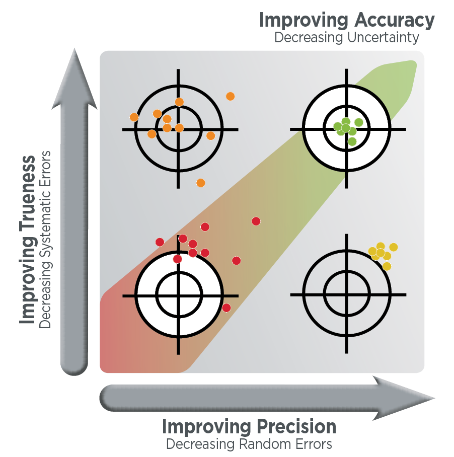
Seminář 2
(7. 10. a 8. 10. 2024):
Maximální chyba, třída přesnosti, analogové a digitální přístroje
přednáška
cvičení
seminární úlohy
vzorové řešení
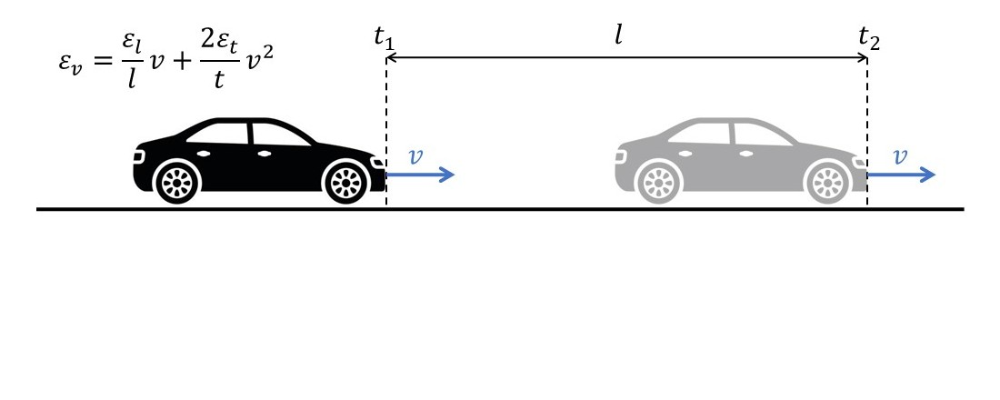
Seminář 3
(14. 10. a 15. 10. 2024):
Náhodná proměnná a její popis
přednáška
cvičení
generátor náhodných čísel v Excelu
generator.xlsx
histogram v Pythonu bod po bodu
rand-histogram-1.py
histogram v Pythonu pomocí plt.hist
rand-histogram-2.py
histogram v Pythonu pomocí np.histogram
rand-histogram-3.py
barevný test generátoru náhodných čísel v Pythonu
randomcolours.py
simulace exponenciálního rozpadu v Excelu
simulace-exp-rozpad.xlsx
a v Pythonu
exp-rozpad2.py
seminární úlohy
vzorové řešení
vykreslení grafu hustoty pravděpodobnosti a distribuční funkce exponenciálního rozdělení v
Gnuplotu
vykreslení grafu hustoty pravděpodobnosti polohy matematického kyvadla v
Gnuplotu
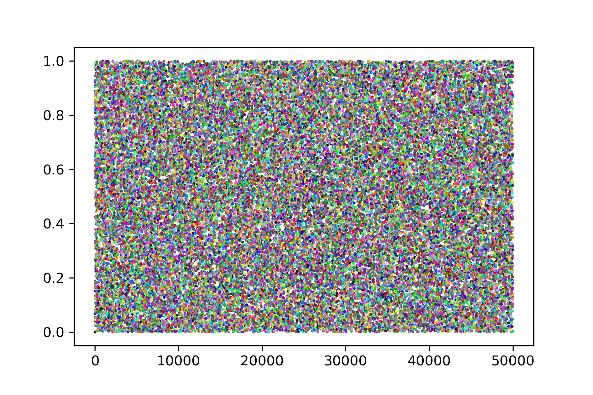 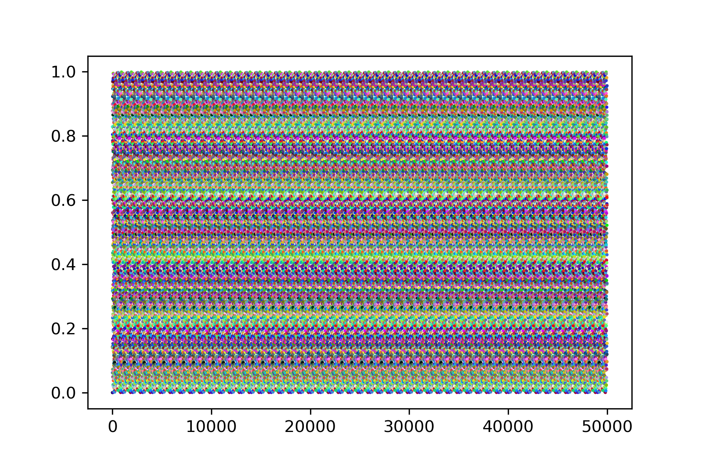
Seminář 4
(21. 10. a 22. 10. 2024):
Histogram, momenty rozdělení
přednáška
příklad
použití momentů vyšších řádů
cvičení
soubor s daty
data.dat
Python program pro vytvoření histogramu
histogram.py
Python program pro určení optimálního počtu binů histogramu
histogram-auto.py
Python program pro simulaci dat a vytvoření histogramu
hist-simulate.py
a
hist-simulate2.py
seminární úlohy
vzorové řešení
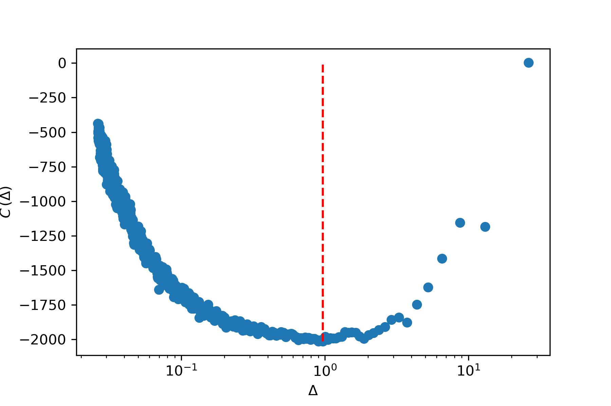 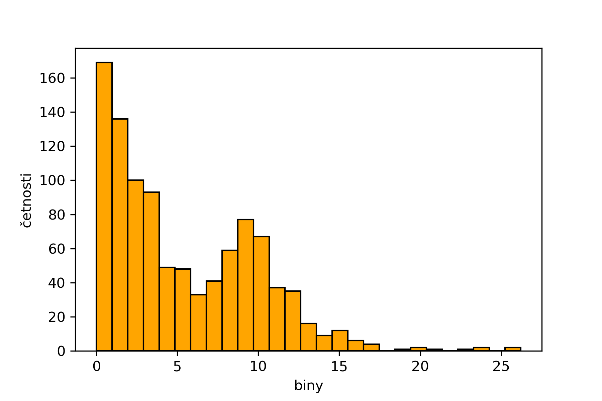
Seminář 5
(4. 11. a 29. 10. 2024):
Binomické a Poissonovo rozdělení
přednáška
vedlejší výpočty
k binomickému a Poissonovu rozdělení
cvičení
Excel soubor
neutrina.xlsx
Python program pro simulaci chyby výšky i-tého binu
hist-bin-err-PH.py
a
hist-bin-err-PH2.py
Python program pro simulaci náhodné procházky ve 2D
randomwalk-2D.py
a
randomwalk-2D-PH.py
seminární úlohy
vzorové řešení
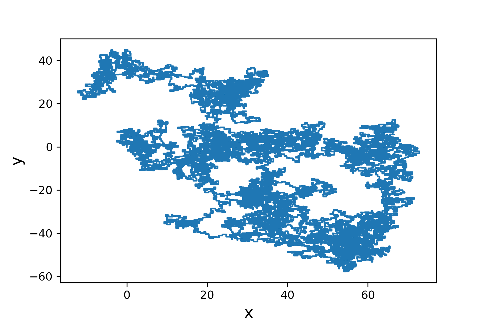
Seminář 6
(11. 11. a 12. 11. 2024):
Rovnoměrné, normální a Cauchyho rozdělení
přednáška
vedlejší výpočty
k rovnoměrnému, normálnímu a Cauchyho
cvičení
Gnuplot soubor pro vykreslení grafu funkce erf(x):
erf.gnu
Python program pro vykreslení grafu funkce erf(x):
erf.py
Gnuplot soubor pro srovnání gaussiánu a lorentziánu
gaussian-lorentzian.gnu
Python program pro srovnání gaussiánu a lorentziánu
gaussian-lorentzian.py
Python program pro výpočet hranice geniality
IQ.py
seminární úlohy
vzorové řešení
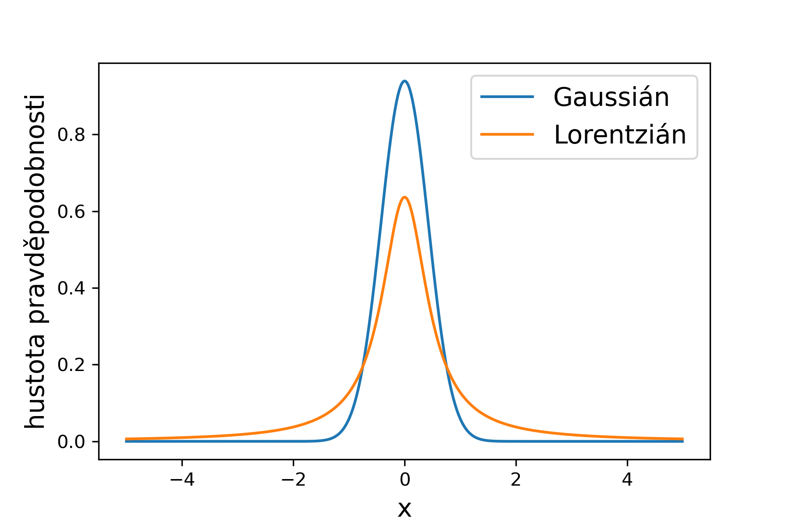
Seminář 7
(18. 11. a 19. 11. 2024):
Centrální limitní věta, kovariance, korelace
přednáška
cvičení
test centrální limitní věty v Pythonu (rovnoměrná rozdělení)
CLT.py
test centrální limitní věty v Pythonu (matematické kyvadlo)
CLT-kyvadlo.py
test centrální limitní věty v Pythonu (log-normální rozdělení)
MLT.py
Excel soubor pro analýzu korelace
korelace-PH.xlsx
seminární úlohy
vzorové řešení
Excel soubor pro výpočet korelace
uloha7.2.xlsx
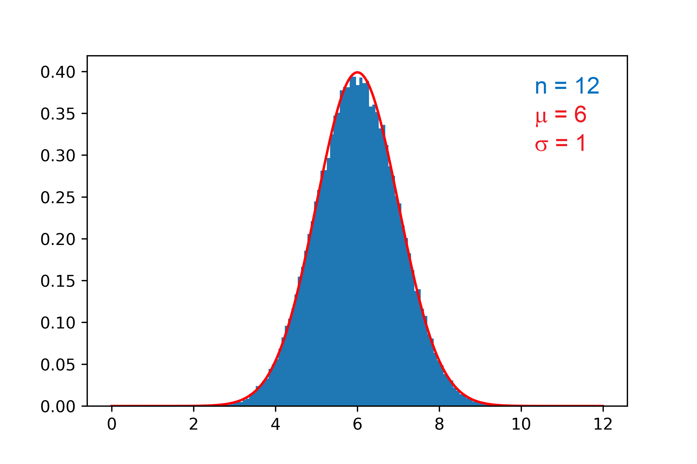
Seminář 8
(25. 11. a 26. 11. 2024):
Testování hypotéz, test korelace
přednáška
Excel soubor pro analýzu korelace
korelace2-PH.xlsx
Python program pro vykreslení gama funkce
gamma.py
Python program pro vykreslení studentova rozdělení
student.py
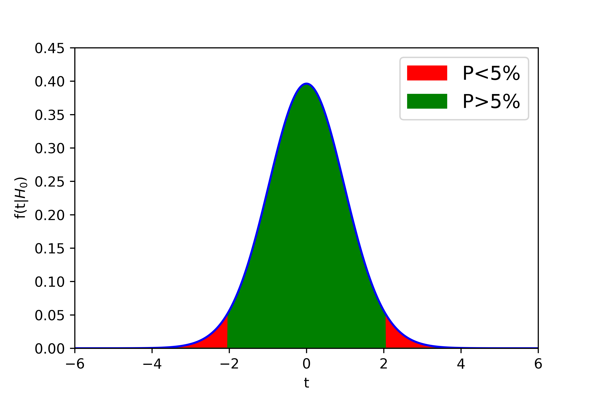
Seminář 9
(2. 12. a 3. 12. 2024):
Metoda přenosu chyb
přednáška
cvičení
sada naměřených dat napětí a proudu
U-I-mereni.dat
Excel soubor se zpracováním naměřených dat napětí a proudu
U-I-mereni-PH.xlsx
Origin soubor se zpracováním naměřených dat napětí a proudu
U-I-mereni-PH.opju
Origin soubor pro vyhodnocení neurčitosti extrapolace lineární závislosti
extrapolace-PH.opju
seminární úlohy
vzorové řešení
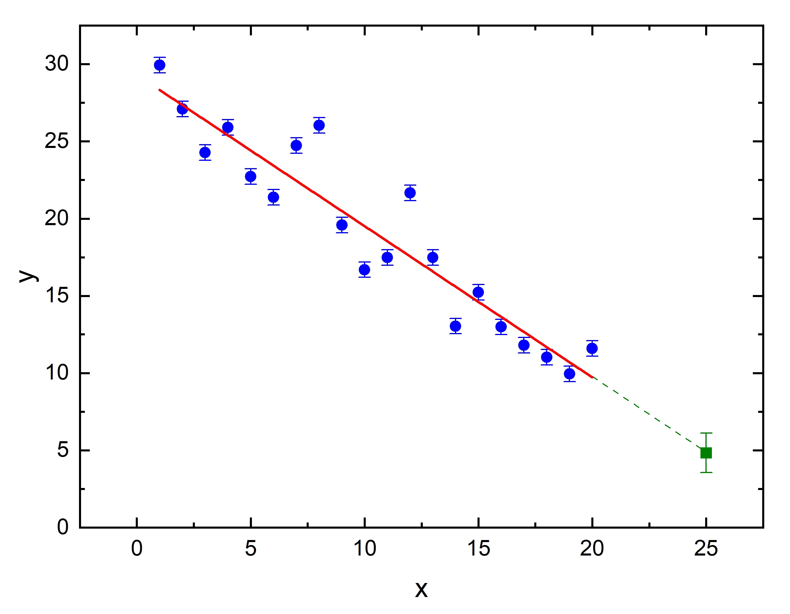
Seminář 10
(9. 12. a 10. 12. 2024):
Odhady parametrů, metoda maximální věrohodnosti, lineární regrese
přednáška
cvičení
Python program pro řešení problému majáku
majak.py
lineární regrese v Excelu
linearni-regrese-PH.xlsx
linearni regrese v Originu
linearni-regrese-PH.opju
seminární úlohy
vzorové řešení
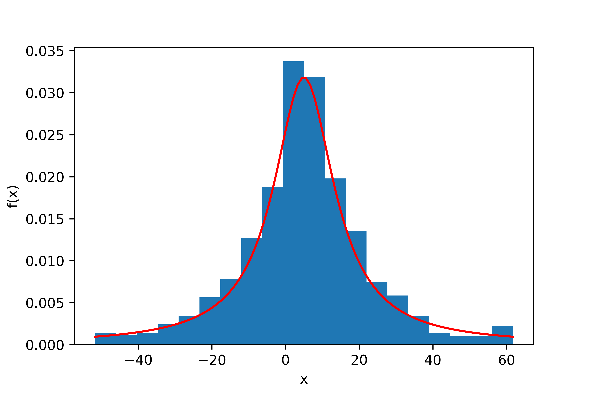 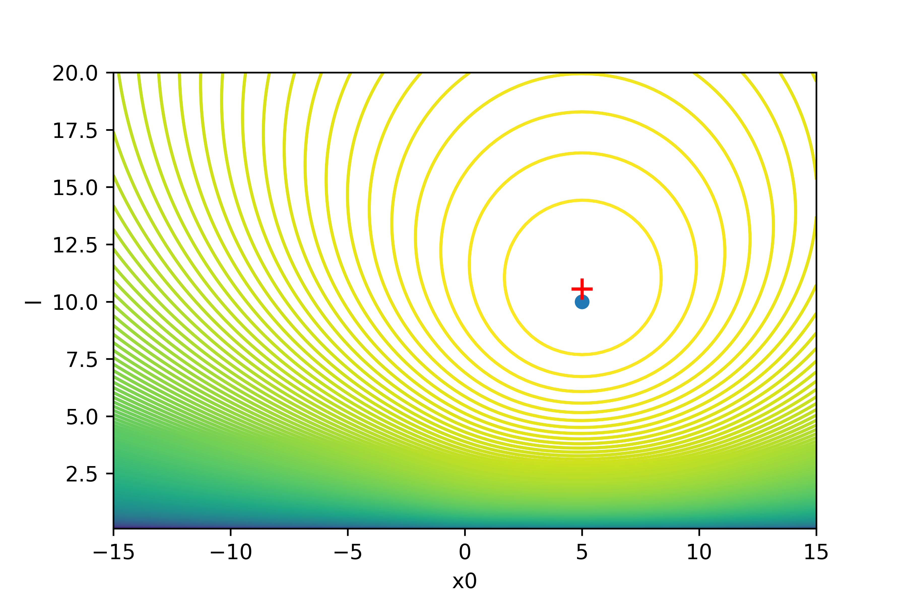
Seminář 11
(16. 12. a 17. 12. 2024):
Metoda nejmenších čtverců, lineární model, nelineární fit
přednáška
Python program pro fit Arrheniova plotu
Arrhenius.py
Python program pro fit difrakce světla na štěrbině
sterbina.py
Python program pro fit difrakce světla na dvojštěrbině
dvojsterbina.py
cvičení
lineární regrese v Pythonu
linearni-regrese.py
a soubor s
daty
simulace a fit polynomu v Pythonu
polyfit_sim.py
nelineární fit difrakce na štěrbině v Pythonu
sterbina_sim.py
lineární regrese s uvážením chyb x a y v Pythonu
lr-exy.py
a soubor s
daty
lineární regrese s uvážením chyb x a y v Originu
linearni-regrese-exy.opju
a soubor s
daty
lineární regrese v Matlabu
linfit.m
a soubor s
daty
fit polynomu v Matlabu
polyfit.m
a soubor s
daty
seminární úlohy
vzorové řešení
Origin soubor s fity
ulohy11.opju
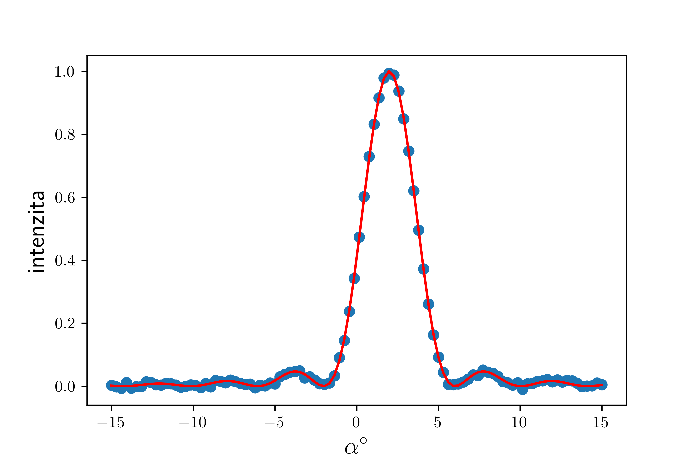 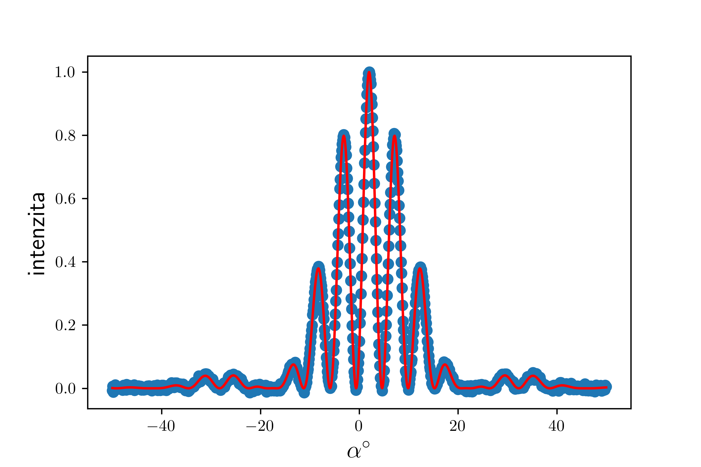
Seminář 12
(6. 1. a 7. 1. 2025):
Chí-kvadrát test kvality fitu
přednáška
obrázek
na závěr
cvičení
- Příklad zpracování naměřených dat (harmonický oscilátor)
zpracování naměřených hodnot v Excelu
harmonicky-oscilator-PH.xlsx
zpracování naměřených hodnot v Originu
harmonicky-oscilator-PH.opju
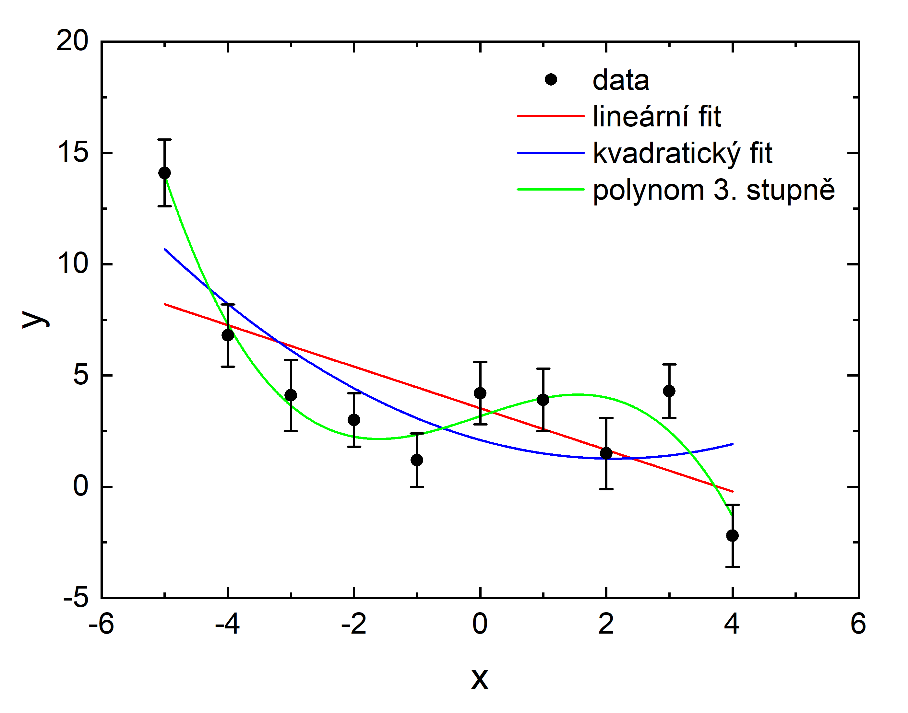